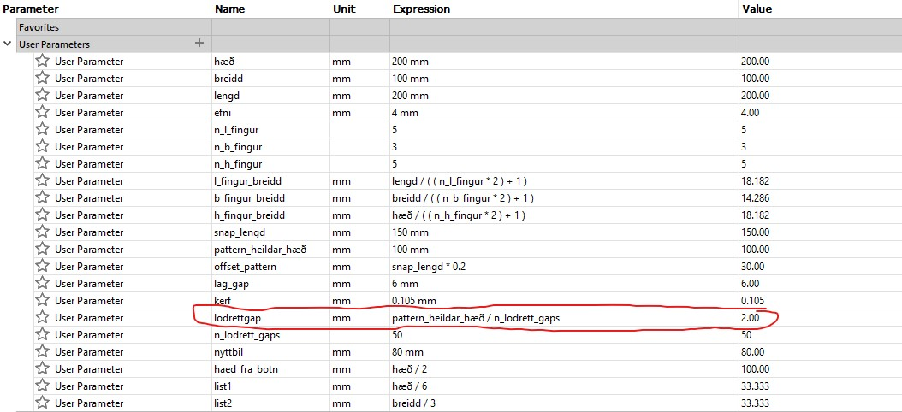
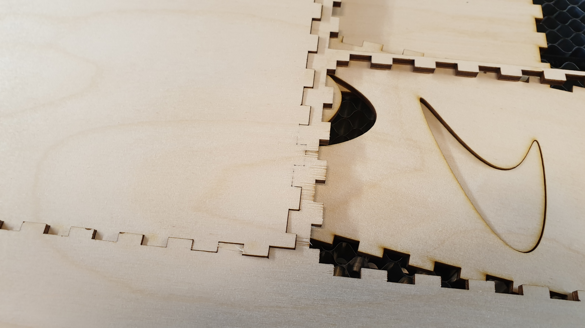

Verkefni 2
Hugmyndavinna (laserskurður)
Í byrjun verkefnisins fór ég fyrst í það að finna út hvað ég ætti að búa til Nota átti laserskera til að skera við, pappa eða plast og átti hluturinn að vera geirneglt (pressfit) saman. Ásamt því átti tölvuteikningin að vera parametrísk þannig að auðvelt væri að breyta til dæmis efnisþykkt, hæðum, breiddum o.s.frv.
Ég leitaði og leitaði að hugmynd þar til ég sá vin minn skera út svokallað "living hinge". Living hinge virkar þannig að efnið er skorið á sérstakan máta sem gerir efnið sveigjanlegt. Þessi týpa af "löm" sést hér á myndinni (Heimild) að neðan. Mér fannst þetta svo sniðugt að ég varð að búa til eitthvað með þessu.

Karfa sem hægt er að festa á borð (eða hvað sem er!)
Á myndinni hér beint að neðan sést hugmyndin mín í allri sinni dýrð. Tvö living hinges eru geirnegld á kassa. Svo á að vera hægt að beygja lamirnar saman þannig að á milli þeirra sé spenna. Með því að gera það ætti að vera auðvelt að festa körfuna á til dæmis borð eða hillur auðveldlega. Svo er hægt að nota körfuna til að henda rusli í eða einfaldlega geyma hluti í. Til þess að gera hönnunina skemmtilegri set ég svo eitthvað listrænt á körfuna.
Teiknað í Fusion 360
Þegar að hugmyndin var svona nokkurnvegin komin þá fór ég í að teikna hana upp í Fusion 360. Eins og kemur fram í verkefnalýsingunni var reynt að hafa allt með parametrum. Það gerði í rauninni allt miklu auðveldara því ég var ekki viss með hvað allt ætti að vera stórt.
Karfan sjálf var einfaldur kassi og var lítið mál að teikna hann upp ásamt því að setja upp parametra. Eins og sést á myndinni hér að neðan þá var á þessu stigi nánast allt komið.
Eftir að hafa teiknað upp körfuna var farið í aðalmálið, lifandi lamirnar. Ég þurfti fyrst að finna hvernig best væri að teikna lifandi lamirnar. Ég fann gott myndband á Youtube um það. Eins og sést á myndinni hér að neðan þá eru allar stærðirnar í parametrum. Myndin er kannski smá yfirþyrmandi til þess að byrja með en mikilvægasta stærðin er sú sem ég dreg rauðan hring um. Þessi stærð hefur mest að segja um sveigjanleika lamarinnar. Á myndinni fyrir neðan þessa sést jafnan fyrir þessa stærð en hún er heildar lengd lifandi lamarinnar deilt með fjölda "lóðrétta" bila í mynstrinu.
Nú þegar næstum allt var komið þá fór ég í að testa lamirnar mínar. Ég prentaði þrjár mismunandi prufulamir með mismunandi stærð á "lodrettgap". Þessar stærðir voru 2, 2.5 og 4 mm.
Fyrir testin minnkaði ég stærðina á lifandi löminni þannig að hún var um 10 cm á breidd og 12 cm á lengd. Þegar ég var búinn að því þá valdi ég sketch-ið af testinu í Inventor og valdi "export to DXF". Svo opnaði ég DXF skránna í Inkscape þar sem að ég lagaði línuþykktirnar og eyddi út leiðinlegum hjálparlínum sem fylgdu með sketch-inu. Svo var save-að sem .svg skrá, sett hana á usb kubb og hann stunginn í tölvuna við laser skerann. Svo var bara skorið!
Hér að neðan sést fyrsti laserskurður verkefnisins :) 2mm testið tilbúið! Hér að neðan sést hversu vel 2mm testið bognaðist. það var fyrsta testið sem ég skar út og eftir að hafa handleikið það þá var ljóst að 2mm væri líklegast bara fínt fyrir verkefnið. Til öryggis skar ég einnig út 2.5 og 4 mm testin til þess að vera alveg fullviss um að ég væri að velja rétt. 4 mm testið var alltof stíft og það því miður brotnaði undir álaginu. 2.5 mm testið var að mínu mati aðeins of stíft, en það myndi að öllum líkindum virka. Ég ákvað að nota 2 mm fyrir lokaskurðinn. En ef það væri ekki að virka nógu vel, til dæmis ef að lamirnar gætu ekki haldið uppi körfunni þá gæti fært mig upp í 2.5 mm.
Hönnun endurbætt örlítið
Eftir að ég gerði testin tók ég eftir smávegis sem mætti bæta á hönnuninni minni. Í fyrsta lagi færði ég fingurnar sem voru efst á körfunni inn í bakplötuna. Með þessu þá ættu þessir fingur að haldast betur heldur en ella þegar að spenna kemur á lömina. Ásamt því sést að ég bætti við "list" á hliðar körfunnar sem er öll gerð með parametrum svo hún hreyfist með körfunni þegar að þeim er breytt. Listin þjónar þeim tilgangi að hún gerir körfuna fallega ásamt því að hægt er að sjá nokkurn veginn hversu full karfan er.
Mæling kerfs fyrir skurð
Áður en farið er í að laserskera allt dæmið þá var nauðsynlegt að finna hvert þvermál lasersins er (eða kerf á ensku). Það er mikilvægt af því að ef ekki er tekið tillit til þvermál lasersins í lok teikniferilsins að þá munu málin ekki koma rétt út. Til dæmis þá myndu press fit-in ekki passa fullkomlega saman.
Til þess finna þvermál lasersins teiknuðum við 10 litla kassa sem í heildina mynduðu stærri rétthyrning sem var 100 mm á lengd í Fusion teikniforritinu. Eftir það var teikningin skorin út í laser skeranum á krossvið. Svo, eins og sést á myndinni hér að neðan, ýttum við öllum litlu bútunum út í eina hlið ytri rétthyrningsins og við mældum bilið sem varð eftir. Línurnar sem að skiptu kössunum á milli sín voru í heildina 11 talsins (eða 11 kerfs). Við fengum því KERF með því að nota eftirfarandi formúlu: þvermál laser skurðs (kerf) = heildar kerf [mm]/fjöldi kerf lína
heildar kerf = 1.16 mm
fjöldi kerf lína = 11
Þannig að við fengum að kerf laser skurðsins væri: kerf = 1.16/11 = 0.105 mm

Kerf stillt og allt gert klárt fyrir laser skerann.
Til þess að taka tillit til kerf-sins með Fusion 360 þá fylgdi ég þessu myndbandi. Hins vegar það sem ég þurfti að gera öðruvísi en í myndbandinu var að færa living hinge sketchin beint á plöturnar innan í Inkscape! Ástæðan fyrir því er að útlínurnar á living hinge-inu eru bara sketch línur en ekki "hluti" af body-unum í Fusion. Það var hins vegar voðalega lítið mál að gera þetta!
Allt gert reddí í Inkscape :).Laserskera og setja saman
Svona er ferlið að laserskera í grófum dráttum- Hlutur teiknaður í teikniforriti
- Taka tillit til kerfsins (myndband)
- Export file-inn sem .dxf
- Opna í Inkscape, raða upp, velja svo allt og breyta línuþykkt í 0.02 mm
- Vista sem .svg file, setja hann á USB-kubb
- USB kubbur stunginn í tölvuna hjá laserskeranum
- Mikilvægt var að hafa speed í 30%, power í 100% og frequency í 10% í laserskeraforritinu
- Stilla Auto Focus á "Thickness" og hafa Thickness stillt á 4 mm
- Passa að krossviðsplatan sé ekki of bjöguð
- Skera svo út!
Ég byrjaði á að gera pressfit test, þ.e. Ég prentaði litla hluta af heildar körfunni og lömunum til þess að athuga hvort að kerf-ið sem við mældum var að virka vel. Testið kom vel út og fingurnir héldust vel í eins og sést á myndinni hér að neðan:
Svona leit allt svg file-ið út þegar það var komið inn í laserskera forritið. Mér fannst framhliðin á körfunni frekar tómleg svo að ég bætti við texta fremst á hana “Made in Iceland” sem hún svo sannarlega var. Einnig sést ég sirka tvöfaldaði fingurna allsstaðar fyrir skurðinn. Ég gerði það svo að allt myndi haldast betur saman.
Áður en ég skar allt út tók ég eftir að krossviðsplatan hallaði frekar mikið út í hornunum. Það er mjög mikilvægt fyrir lamirnar að þær skerist út á jöfnu plani. Ég henti því öllu út úr Inkscape skjalinu nema lömunum. Ég fann svo jafna fleti á krossviðsplötunni og skar lamirnar út þar.
Lamirnar komu vel út og ég fór næst í að skera út restina:
Krossviðsplatan var búin að verpast aðeins eins og sést á þessum skurð:
Ég náði samt að redda þessu með því að klippa þessa ljótu enda af fingrunum.
Þegar ég var búinn að setja allt saman leit það svona út:
Ég reyndi að festa körfuna á borð og hillur en það var ekki að virka. Karfan bara lak niður og vildi detta á gólfið. Líklegast þyrfti living hinge-ið að fara úr 2 mm í 2.5 mm fyrir aðeins meiri spennu á festinguna. Annað sem að hægt væri að gera væri að færa lamirnar nær hvor annarri og sjá hvað gerist.
Hins vegar eins og sést á myndinni hér að neðan þá virkuðu lamirnar mjög vel á borði sem flott support undir körfuna. Ég er á því að það að hafa hana svona er flottara en upphaflega hugmyndin og ég er því búinn að ákveða að halda hönnuninni svona.
Það kom mér verulega að óvart hveru flott þetta lítur út á hversdagslegu borði, virkar vel sem geymslu/ruslakarfa. Hægt er að geyma símaa, fjarstýringar, tölvumýs, heyrnartól, nota þetta sem skjávarpahaldara, möguleikarnir eru óendanlegir. Listin á hliðunum er einnig einstök (og parametrísk!). Get vel séð fyrir mér að þetta gæti selst í Kúnígúnd í Kringlunni á lágmark 30.000 kr.
Vínylskurður
Eftir laserskurðinn fór í vínylskurðarhlutann á verkefninu. Það átti sem sagt að vínylskera eitthvað, skurðarflöturinn var max 100x50 cm. Það átti ekki endilega að hann eittvhað sjálfur heldur einungis prófa vínylskerann og sjá hvernig hann virkar.
Núverandi fartölvan mín er algjört drasl og mér langar smá í MacBook Pro. Í staðinn fyrir að eyða hálfri milljón króna í nýja fartölvu þá einfaldlega ákvað ég að skera út Apple logo-ið og setja á drasl fartölvuna mína.
Svona var vínylskeraferlið í grófum dráttum:- Finna mynd á netinu
- Setja mynd í Inkscape
- Fara í path og velja "trace bitmap"
- Fara svo í fill and stroke og nota sömu stillingar og í laserskurðinum
- Vista sem .pdf file, setja á USB-kubb
- USB kubbur stunginn í tölvuna hjá vínylskeranum
- Stilla upp efninu í prentarann og skera!
Vínyll settur í skerann og tekið af (kennari hjálpaði mikið!).
Tape var sett yfir vínylinn til að auðvelda límingarferlið

Logo-ið kom vel út, er þetta MacBook Pro? Ég held það!